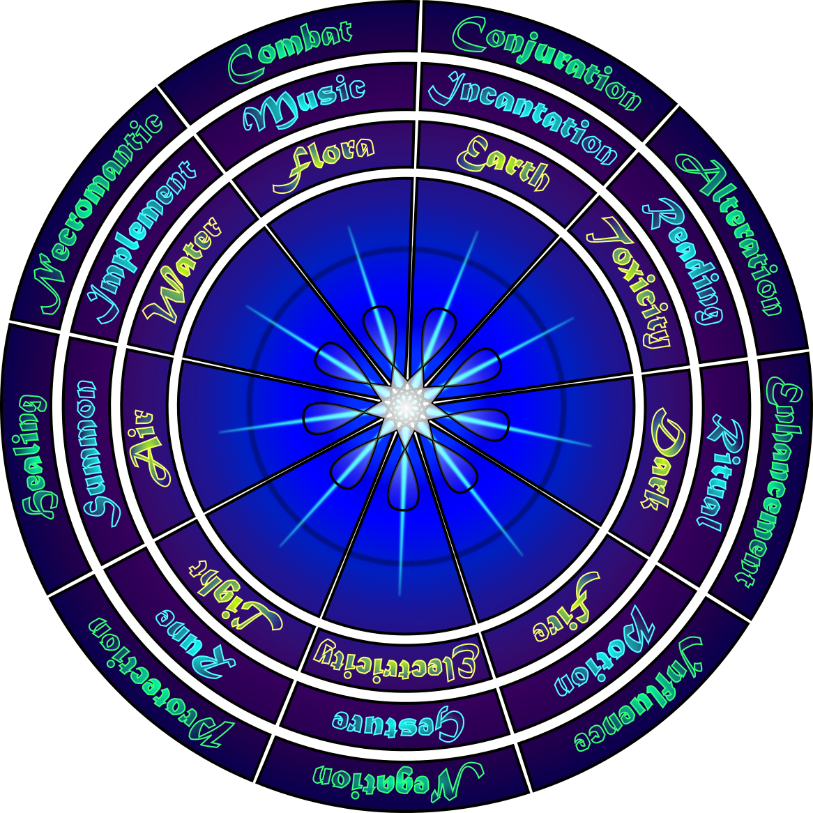

At first, playtesting will focus entirely on marital (non-magical) combat. There are currently very few options for spellcasting, but the following are the rules I have mapped out so far.
Spells
Magic is an integral part of the world. Most creatures use it to some degree, even if it’s just to help them jump higher, think better, or recover faster. In these ways, magic is frequently used without effort and sometimes even unknowingly. But powerful arcane affects usually require study and practice to use. This way of manipulating magic is called spellcasting, and the effects produced are called spells.
Magic Circles
Through careful examination of magical trends, mages have identified 3 dimensions of magic each with 9 primary categories. These are called Magic Rings or Magic Circles.
The 3 Magic Circles are: the School of magic (the purpose for its use), the Method of magic (how it is cast), and the Element of magic (the elemental power used).
These are called circles because each category is related to two other categories (the adjacent ones in the circle).
Note: While this is a convenient and almost universally accepted way of grouping spells together, magic is more complex than any mortal can fully understand.
Schools of Magic
The purpose for its use.
| Protection | Healing | Necromantic | Combat | Conjuration | Alteration | Enhancement | Influence | Negation |
|---|---|---|---|---|---|---|---|---|
| Temporal | Divination | Illusion | ||||||
| Translocation |
Protection: Focuses on keeping oneself or their allies safe from harm, often through boosting defenses and minimizing damage.
Healing: Gives aid to those who are injured, restoring their aura and energy.
Necromantic: Focuses on the manipulation of life and death, sometimes draining the life of others, and sometimes giving life to the dead.
Combat: Is intended for damaging other creatures or causing destruction. It is the most aggressive of the schools.
Conjuration: Involves the creation and invoking of many things: tools, armor, food, elements, and more. Unless otherwise specified, conjurations occur within the reach of your body and you can’t conjure items through an obstruction or inside solid objects—such conjurations fail.
Alteration: Alters things that already exist, such as telekinetically moving objects or re-shaping the earth. It also encompasses temporal and translocation magic, though these realms usually require special study to master.
Enhancement: Boosts the natural abilities of creatures and grants new powers such as invisibility and flight.
Influence: Is all about a being’s mind and how to affect it. This school specializes in social manipulation as well as illusion magic.
Negation: Contains spells that detect and remove magic.
Methods of Magic
The way it is used.
| Ritual | Potion | Gesture | Rune | Summon | Implement | Music | Incantation | Reading |
|---|---|---|---|---|---|---|---|---|
Ritual: As the most powerful method of casting, rituals require the most amount of time to perform. Most rituals take five to sixty minutes but the most powerful ones can take days. Some rituals require certain components which will be listed in the spell. The most common component is Aura Strength, which may be given by the caster or taken from other creatures.
Most rituals require you to walk in a pattern, position objects, draw on the ground, and/or meditate.
Potion: Making potions takes time and thus, like rituals, is usually done outside of combat. To gain the benefit of a potion, the user must ingest or sometimes inhale the potion. Potions have the advantage of being able to be stockpiled and saved for when they are needed as well as being easily used by anyone. They have special rules (see Potion Rules).
Drinking a potion takes 2 Energy, representing the time it takes to put it to your mouth and fully ingest it. This does not include the time it takes to equip a potion (Only 1 Energy if the potions are kept in a convenient location). While it would require two free hands to quickly drink a typical capped/corked potion, any ways of making the potion quickly accessible with one hand is common. In fact, most potions meant for combat are sold in enchanted bottles which can be easily uncapped using only 1 free hand.
Gesture: Gestures are typically the fastest way to produce a magic effect. That being said, a subgroup of gestures is forms, and these often take longer to perform.
You require control of at least one free hand to cast a gesture spell.
Rune:After a rune is cast, it must later be detonated/activated to release its full effect. Unless otherwise stated, each rune spell may only have one version of itself active at one time and lasts up to 10 minutes.
Rune Conditions: Many rune spells allow you to specify certain circumstances upon which the rune will activate. When they do this, consider that runes can only “sense” so much which limits the possible conditions upon which a Rune can activate. Runes can sense up to 1m around it or up to the effect distance of the rune. When cast on creature, runes can sense many attributes of the creature, such as Aura, Stamina, and movement. Runes cannot have a condition based on abstract or relative concepts such as “hostile creature,” “person named Joe,” “well-dressed,” or “old.” Runes cannot perfectly identify things like race, but can sense things like size and appearance to attempt to differentiate base on race. For instance, you could make orc proximity the condition of a rune, and the rune will activate when anything resembling what you believe an orc looks like gets close.
Summon: The creation and control of magical creatures or objects is the domain of summoning spells. These spells vary widely in time they take to cast and the resources required.
Implement: Implement spells require a magical implement to cast. Some common implements are orbs, rods, staffs, and amulets but just about anything can be an implement. Each implement is restricted to casting certain types of spells (for example, a staff which can only be used to cast fire spells). Implements are known for their ability to focus and enhance magic and most will give special bonuses to spells cast through them.
Music: Distinct from Implement magic, music magic doesn’t use instruments as implements, but uses the flow of music itself to create the magical effects. This means that even singing can create powerful music magic. Oftentimes, music magic has an area of effect based on who can hear the music, but it can also be used to create targeted effects.
You must be able to make music in some way to cast music magic.
Incantation: Usually requiring little time to cast, incantations are commonly the first spells taught to novice mages.
Incantations require full control of the vocal cords to cast.
Reading: For ages, magic has been stored in physical writing, but it takes someone proficient in reading spells to tap into this power. If you are Proficient in reading magic, you can write down the reading spells you know by infusing the text with arcane power and can read from your writing later to cast the spells.
To cast a reading spell, you must read the relevant text out loud while touching its source to activate the spell. This typically means you require at least one free hand to hold the text. Mages will often write their spells on the same paper or in the same book so that they can easily access all their reading spells.
Elements of Magic
The element that is used.
| Fire | Electricity | Light | Air | Water | Flora | Earth | Toxicity | Dark |
|---|---|---|---|---|---|---|---|---|
| Ice | Wood | Metal | Poison | |||||
| Sand | Disease | |||||||
| Acid |
Casting Spells
All spells require a Cast roll to determine if they are successfully executed unless the spell’s Successful Cast Number is 1 or less (in which case you automatically succeed at casting the spell). If the Cast roll is less than the Successful Cast Number (SCN), you fail at casting the spell.
If the Cast roll is a natural 1, 2, 3, 4, or 5 you are Exposed. If it is a natural 1, you are Unguarded.
If the Cast roll is a natural 20, you crit. This does not necessarily mean you successfully cast the spell (you still must meet or exceed the SCN) but if the spell does succeed, then you automatically hit your target (you need not make a Hit roll) and ignore their armor.
Cast Roll = 1d20
Successful Cast Number (SCN) = Spell Level – Spell Bonus
Spell Bonus = Halved Ability Modifier + Keyword Bonuses + 1/3 Level
After you successfully cast a spell, if the spell is also a Ranged Attack, you still need to determine if it hits the target with an additional Hit roll (which is a 1d20 with nothing added) that must greater than or equal to the Miss Chance to hit. Ranged Spell Attacks use a Miss Chance like other Ranged Attacks, but the Miss Chance Modifier for spells is different. (see Ranged Attacks)
Spell Miss Chance
If you hit the target, you then determine whether you hit their armor. If your Hit roll is less than the target's Ranged AC, then you hit their armor and must subtract its AR from the damage you deal.
Some spells have the target make a Will or Fortitude save, in which case the DC for these saves is your Spell DC.
Spell DC = 5 + Spell Bonus
Note: You may always terminate an ongoing spell you cast whenever you like.
Spell Proficiencies
You may only learn spells that match at least one of your school or elemental Proficiencies.
You may only cast spells using a method you are Proficient in.
If you ever gain a second Proficiency in the same school/method/element you may choose a different spellcasting proficiency within the same circle.
Some elements, methods, and schools are subgroups which represent more specific areas of study. Spells with these subgroups will display the parent Keyword in parenthesis (eg: Ice(Water) and Disease(Toxicity)). If you are Proficient in Water (and not Ice) you can cast Ice spells, but do not gain the +2 Keyword bonus when casting Ice spells. If you are Proficient in Ice (and not Water) you cannot cast Water spells and gain a +2 Keyword bonus to Ice spells.
When determining keyword adjacency (for the purpose of feats and the like), all subgroups are only adjacent to their parent group and the parent group is adjacent to all its subgroups as well as the adjacent Keywords on the relevant magic circle
Keyword Bonuses
A school or elemental Proficiency gives you a +2 Keyword bonus to spells with that Keyword. So if you are Proficient in Combat magic, you gain a +2 Keyword bonus when casting any Combat spell.
Keyword bonuses max out at +5 meaning you cannot get more than a +5 bonus from keywords.
If a spell has multiple schools of magic keywords it counts as all those schools. The same is true for spells with multiple elements (unless it is cast making use of only one element). However, spells with multiple methods of magic always only count as one of the methods at a time, depending on which one you choose to use.
Spellcasting Abilities
When you cast a spell, you must decide which Ability you are tapping into to cast it, before you make the Cast Roll. This Ability may be Intelligence, Wisdom, or Charisma. When referring to an Ability (for instance, the Halved Ability Modifier in the Spell Bonus equation) in the context of spells, you always use the Ability you are casting the spell with. You may only cast a spell using an Ability if the Ability Score is 10 or above (so if your Int, Wis, and Cha are all lower than 10, you can’t cast any spells).
You gain different benefits depending on which Ability you use:
- Intelligence:
- ◇ If your Intelligence is 11 or higher, your crit range is increased by 1.
- ◇ If your Intelligence is 13 or higher, the maximum bonus you can get from Keywords is +7, instead of +5.
- ◇ If your Intelligence is 15 or higher, when you roll a natural 1 on a Cast Roll, you may re-roll it, but still become Unguarded.
- Wisdom:
- ◇ IIf your Wisdom is 11 or higher, you are Exposed on a Cast Roll 4 numbers lower than you normally would be.
- ◇ If your Wisdom is 13 or higher, you gain a -1 bonus to your SCN.
- ◇ If your Wisdom is 15 or higher, you do not become Unguarded on a Cast Roll of a natural 1, but do become Exposed.
- Charisma:
- ◇ If your Charisma is 11 or higher, you gain +2 to your Spell DC.
- ◇ If your Charisma is 13 or higher, you gain -4 SCN on spells with a Spell Level of 12 or less.
- ◇ If your Charisma is 15 or higher, if you have at least a +5 Keyword bonus, you also have a -2 bonus to your SCN.
Spell Properties
At-Will: The spell has no limit to how many times it can be cast.
#x Short Rest: The spell can only be cast # times per Short Rest. If you fail at casting the spell, it does not count against your number of uses of the spell per Rest.
#x Long Rest: The spell can only be cast # times per Long Rest. If you fail at casting the spell, it does not count against your number of uses of the spell per Rest.
Spell Level: This determines how difficult the spell is to cast. It is the number at the top right of the spell.
Range #/#/#m: Some spells have Range Values (See Range Values). These only apply to the Hit roll, NOT the Cast roll.
Range #: Some spells have just one range value, which means the spell can take affect within this range (the description may give more detail).
Hit: This is found in the spell’s description and the following effects only happen if the target is hit.
Effect: This is found in the spell’s description and the following effects happen regardless of whether or not the target is hit (though the spell must be successfully cast).
If you fail the casting of a spell, it does not count against your number of uses of the spell per Rest.
Here is an example Spell:
Hit: 1d4 + Halved Ability Modifier Cold damage and the target must succeed on a Fortitude roll or lose 1 Stamina. This damage ignores half the AR of the target (rounding ignored AR up).